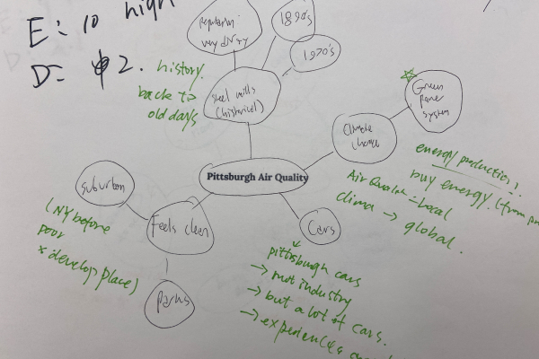
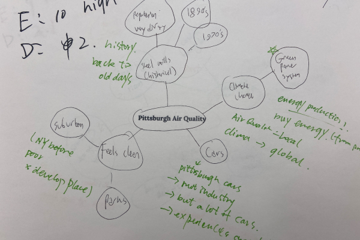
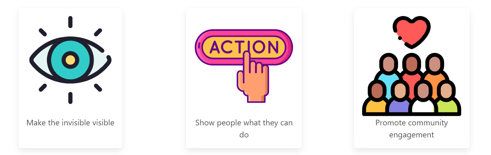

Air In Pittsburgh
An online museum exhibit about air quality in Pittsburgh

Overview
Time
February 2020 - May 2020
Client
Carnegie Museum of Natural History
My Role
Research, Learning Experience Design, Website Development
Keywords
Informal Learning, Interactive Learning
Teammates
Estelle Jiang, Elizabeth Wang
My Contribution
To understand the issues of air quality in Pittsburgh, I conducted interviews with local museum visitors and subject matter experts on the history of Pittsburgh air quality and environmental policies.
Based on the research, I fleshed out the specific learning goals for our online exhibit. I then designed and developed the online learning experience with multimedia assets based on our research findings and learning goals.
Problem
Pittsburgh had a grim history of poor air quality in the last century because of the mining and steel industries. It’s still one of the cities with the worst air quality in the US now. However, many local residents are not aware of the air quality issues and don’t know what they can do to help improve air quality in their own communities.
Solution
Our final deliverable is an online web exhibit with three main sections:
- Pittsburgh’s air quality throughout history (scrollable gallery)
- Types of pollutants in the air (an exploratory activity)
- Actions to improve air quality in the future (an interactive game and discussion board)
Visitors will follow the webpage to walk through the exhibit while learning about air quality, reflecting on their actions by the end.
Design Process
Research Phase
■ Understanding visitors’ current knowledge
To understand museum visitors’ current understanding and awareness of the air quality issue in Pittsburgh, we conducted personal meaning map (PMM) studies with the visitors at the Carnegie Museum of Natural History.
In the PMM study, we asked visitors to:
- Create a concept map based on “Pittsburgh Air Quality”
- Answer interview questions about their knowledge
- Complete a short survey

 

From the PMM study, we found that:
🔍 Visitors are not very aware of the air quality issue in Pittsburgh but are not reluctant to know more about it.
🔍 Raising awareness of air quality may increase the extent of visitors’ knowledge.
🔍 Most visitors only have surface knowledge of, especially the negative side of, the air quality in Pittsburgh.
■ Recognizing key learning objectives
In order to better understand the air quality issues in Pittsburgh, we conducted interviews with 4 subject matter experts.
These experts informed us on:
- the history of air pollution in Pittsburgh
- the natures of the air pollutants
- how to raise awareness of the air quality issues
- how to encourage the participation of local residents.
Learning Objectives
After interviewing with the subject matter experts, we identified the following learning objectives:
Visitors should be able to:
- Identify air quality index as a measurement for air quality
- Recognize that Pittsburgh had a grim history of poor air quality
- Recognize the different types of air pollutants and their effects
- Understand what actions can be taken to improve air quality
- Recognize how they can contribute to improving air quality
- Be positive that the community can work together to improve air quality
Expert Insights
We also gained some design insights from the SME interviews:
Design Phase
To guide our design, we used the local and past, present, and future frames to give our design local relevance and to encourage local participation.
■ Initial Ideation
Our initial idea was based on a physical magazine as our medium. The visitors will interact with the magazine and play with the activities in it. At the end of the exhibitions, they can take a booklet with them to continue their learning.

■ Shifting to the online format
Due to the impact of the COVID-19 pandemic, the museum was closed and we have to move our exhibit to a remote format. The revised exhibit is an online webpage with informative multimedia and interactivities. We validated our idea with storyboards and iterated our design with a series of user testings.

Final Design
Entry Section
The entry of the exhibit will be a real-time AQI index of the air quality now in Pittsburgh.
Visitors can explore the meaning of AQI and get a basic sense of how the air quality is right now.
These information aligns with the conceptual learning goals of air quality index.
This entry point is framed in the present so that visitors will feel it’s relevant to their current life.

Memories of the Past
After the visitors learned about the basics of air quality. They might think that the air in Pittsburgh is not bad.
But the scrollable gallery takes them back to the last century, in which Pittsburgh was well-known as the "Smoke City".
They will learn about the history of how the steel and coal industry caused major air pollution problems and what actions Pittsburgh took to combat it.

Invisible Threats
Visitors are then brought back to the present time to learn about the invisible pollutants around them.
They will first see a real-time data chart of the main pollutants. And then learn about the potential sources of such pollutants through the interactive magnifier activity.
The background picture of the activity is their own community. It can give visitors a sense of local relevance.

Future Actions
The last section calls for visitors' action in the future.
Using a future frame, visitors are asked to think about how their actions might influence the air quality of Pittsburgh in the future.
They can play with the different types of actions in the interactive game and see immediate results of their chosen action. The icons, color of the image, and AQI index will change based on the visitors' chosen actions.
At the end of the exhibit, visitors can share their reflections and discuss potential actions with other visitors in the discussion board.